我们所熟知的科学计算一般就是指数值计算,数值计算是计算数学的一个主要部分,它研究用计算机求解各种数学问题的数值计算方法及其理论与软件实现[1],关于数值计算的研究在计算机被发明之前就已经有了相当的基础,它涉及到的内容包括函数的数值逼近,数值微分与数值积分,非线性方程数值解,数值线性代数,常微分方程与偏微分方程数值解等.数值计算中处理的对象并不仅仅是数值,还包括由数值构成的简单数据结构,例如一般的多项式,无穷级数,矩阵等,数值计算处理问题的一般方法是通过数学推导将问题化归到这些数学对象的运算上.
作为应用数学,数值计算的主要目标是解决来自于生产实践的工程学问题.与此同时,数学工作者做数学研究本身也是一种生产实践,数学研究过程中同样会产生许多问题,与工程学问题不同,这些问题往往只能用抽象的符号来表达,仅用数值计算的方法是不易解决的,对于这类问题解决方案的研究逐渐形成了应用数学的一个新的分支,为了与数值计算相区别,常常称之为符号计算.类似的,我们可以给符号计算下一个简单的定义:符号计算是一门研究用计算机求解各种数学问题的符号计算方法及其理论与软件实现的科学,它是数学(家)的计算数学.符号计算中处理的数据和结果都是符号,这种符号可以是字母,公式,也可以是数.与数值计算不同的是,数是作为一种符号出现在符号计算中的,这就要求关于数的运算应该是绝对精确的,我们接下来就要讨论关于数的高精度运算.
 整数
整数
在基于硬件的整数指令中,计算机能够处理的整数是有界的,在目前典型的计算机中整数的溢出界都不超过,而符号计算中常常需要处理更大的整数,例如阶乘,斐波拉契数列这样简单的数论函数计算,另一个不平凡的例子是所谓的中间表示膨胀[2],例如采用Euclid算法计算两个整系数多项式的最大公约数时,即使输入的两个多项式和输出的最大公约数多项式都具有较小的系数,计算过程中的中间结果仍然很可能出现非常大的系数.设 在计算过程中将有理数化为整数,我们将得到如下的多项式序列 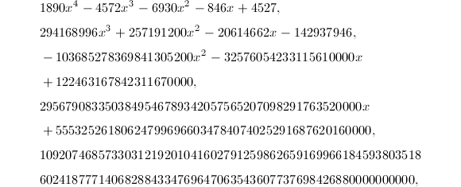 最后的那个整数达到了118位.除此之外,高精度浮点数的表示和运算也是直接依赖于高精度整数的.
整数表示
为了简单起见,在下面的讨论中,如果没有明确指出,我们所说的整数都是正整数.关于高精度整数的表示方法,一个简单的想法是选定进制 ,用整数的进制表示(向量)来表示整数,为了更好的理解这一点,首先对整数的进制表示作一个严格的定义.
,用整数的进制表示(向量)来表示整数,为了更好的理解这一点,首先对整数的进制表示作一个严格的定义.
后,整数的进制表示可以看成由有限集的直和之并形成的无穷维向量空间(类似于一维多项式空间)到整数集的同构.也就是说,每个整数都可以唯一地表示成一个进制整数,这就是进制转换的基础,具体的计算公式见下面的定理.
从计算机科学的角度来看,整数的进制表示包含着数据结构的思想,它将高精度整数所包含的信息用一列较小的单元来共同存储和表示.在现有的符号计算软件中,高精度整数典型的存储格式[3]
如下:
其中 就是整数的进制表示(向量),
就是整数的进制表示(向量), 是进制表示的位数,即这个整数在进制下是多少位数.进制在软件设计之初就要确定下来,高精度整数四则运算的时间随着整数的位数增加而增加,所以在不超过机器精度整数溢出界的范围内,应该选取尽量大的基数,以便充分利用基于硬件的整数指令.在现有的软件中,常常取为10或2的方幂,前者不必在输入输出时进行进制转换,适用于对输入输出速度要求特别高的场合;后者用于计算时有着天然的优势,在后面将会看到,当进制为2的方幂时,很容易通过移位完成一部分乘除法运算.
是进制表示的位数,即这个整数在进制下是多少位数.进制在软件设计之初就要确定下来,高精度整数四则运算的时间随着整数的位数增加而增加,所以在不超过机器精度整数溢出界的范围内,应该选取尽量大的基数,以便充分利用基于硬件的整数指令.在现有的软件中,常常取为10或2的方幂,前者不必在输入输出时进行进制转换,适用于对输入输出速度要求特别高的场合;后者用于计算时有着天然的优势,在后面将会看到,当进制为2的方幂时,很容易通过移位完成一部分乘除法运算.
进制转换
高精度整数输入输出时,常常需要做进制转换,即给定正整数 的进制表示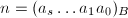,需要得到在进制下的表示.计算方法有如下两种:
的进制表示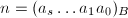,需要得到在进制下的表示.计算方法有如下两种:
- 在进制下除以.设的进制表示为,根据进制表示的定义,在进制下依次计算出
- 在进制下乘以.设进制整数
 ,利用Horner法则,在进制下依次计算,
,利用Horner法则,在进制下依次计算, 从
从 到0.最后得到
到0.最后得到 即为在进制下的表示.
即为在进制下的表示.
当转换极长的数时,最方便的是由转换数字块开始,这些数字块可以用单精度技术来处理,而后用简单的多精度技术把这些块组合在一起[3]
.以第一种方法为例,反复地用除它,于是得到的进制表示,然后对于进制表示的每一位通过单精度操作给出 位进制数字.
位进制数字.
四则运算
本章的开头时曾经强调过,数是作为一种符号出现在符号计算中的,这就要求关于数的运算应该是绝对精确的.在机器精度的范围内,现有的计算机可以轻松的完成整数的四则运算,这主要得益于计算机设计师们的工作.而接下来要讨论的高精度整数四则运算,其基本原理其实和基于硬件的整数指令是一致的,事实上,这就是阿拉伯计数法的发明者们很早就发展出的一整套借助纸笔进行的四则运算理论,我们从小就开始学习熟练地利用它们来操作整数.需要特别指出的是,这里将要提到的加减乘除与作为群运算的加减乘除是不同的,因为加减乘除作为群运算是一个抽象的二元映射,而我们现在要做的其实是基于这些群运算和上一节中进制表示所做的"表面"工作,说得具体一些,就是输入两个数的进制表示,输出群运算结果的进制表示,关键点集中在求出进制表示上.
整数加法
首先来看高精度整数的加法,为了简单起见,假定相加的两个数的位数相同,如果位数不同首先通过添零补齐.注意,这样的假定不会影响算法的效率.
容易看出,这里定义的辅助序列其实就是加到第 位的进位,由于不用输出各位上的进位,算法实际实现时可以只用一个变量来存储.尽管我们对这种笔式加法早已烂熟于胸,但是算法的有效性还是严格地证明一下比较好.
位的进位,由于不用输出各位上的进位,算法实际实现时可以只用一个变量来存储.尽管我们对这种笔式加法早已烂熟于胸,但是算法的有效性还是严格地证明一下比较好.
现在我们将这个算法改写成适合于编程的更加紧凑的形式.
 .
. .
.整数减法
高精度整数减法的方法与加法完全类似,我们直接给出算法.
辅助序列对应于到第位的借位.
同样地,也可以将这个算法改写成适合于编程的更加紧凑的形式.
如果高精度整数有求补操作,那么仿照机器精度整数补码表示的思想,还可以通过补码加法来做减法:用来表示位进制数的补码,则
高精度整数的加减法算法实际上就是对我们熟悉的十进制笔算加减法的精确化描述并推广到进制记数系统后得到的,用表示用它们计算位进制整数和或差时所需要的进制个位数加减法的次数,可以证明,这和必要的输入输出操作相比是都是线性级别的,因此有理由认为这就是理想的算法.尽管如此,在后面有关多项式模算术的讨论中我们将看到,作为多项式模算术的一个直接应用,利用有限域上的整数模算术可以把高精度整数加减法分解成在多个处理器上并行的独立任务,这样一来它就会比经典算法要快.
整数乘法
接下来讨论一位数乘多位数的乘法,这里用到的方法和加减法仍然是相似的,同样可以直接给出算法.
对于多位数乘多位数的情形,如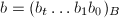,则每一个都是一位数乘多位数,而乘上只需在右边添上个0,或者说左移位,于是可以通过次一位数乘多位数,次加法和添零(移位)求出来.除此之外,在后面的"快速乘法"一节中将会看到,对于多位数乘多位数,我们还有更快的算法.
同样地,也可以将这个算法改写成适合于编程的更加紧凑的形式.
商为一位数的除法
在四则运算的笔算方法中,除法可能是最复杂的,因为除法需要试商,试商包含着猜测的成分,而不能形成有效的算法.机器精度整数除法也要试商,但得益于二进制表示,对它们而言商只有0,1两种情况,只需要比较大小就可以求出.为了有效地计算高精度整数的除法,我们需要将试商的过程算法化[3],首先来看商为一位数的除法,即假定商满足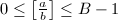,笔算除法的经验告诉我们,被除数和除数的最高几位数对试商是很重要的,我们常常凭借目测(口算)最高几位数就能基本上把商给确定下来.
 故,不等式的前半部分得证.
故,不等式的前半部分得证.
而由 \frac{a_{s+1}B+a_s}{b_s}-1$$" class="latex-display" width="580" height="40">可以得到
![\begin{align*}
\left[\frac{a_{s+1}B+a_s}{b_s}\right]+1&\ge\frac{a_{s+1}B+a_s+1}{b_s}\\
&=\frac{a_{s+1}B^{s+1}+(a_s+1)B^s}{b_sB^s}\\
&>\frac{a}{b},
\end{align*}](./latex/latex2png-Arithmetic_92640136_.gif) 故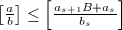,证毕.
□
故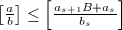,证毕.
□
记则 是商
是商![$\left[{a\over b}\right]$](latex/latex2png-Arithmetic_57194042_-6.gif) 一个很好的上界,下面将看到它已经很接近商的真值:比商的真值至多大2.
一个很好的上界,下面将看到它已经很接近商的真值:比商的真值至多大2.
上面只考虑了被除数的头两位与除数的首位,如果允许做更精细的考察,譬如说考虑被除数的头三位与除数的头两位,我们还可以进一步接近商的真值.
 因为qb-B^s\ge(q-1)b$" class="latex-inline" style="vertical-align: -5px" width="242" height="19">,所以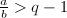q-1$" class="latex-inline" style="vertical-align: -6px" width="67" height="18">,证毕.
□
减一,这时我们总可以说比商的真值至多大1.综合以上这些想法,现在可以写出商为一位数的除法的详细过程了.
因为qb-B^s\ge(q-1)b$" class="latex-inline" style="vertical-align: -5px" width="242" height="19">,所以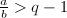q-1$" class="latex-inline" style="vertical-align: -6px" width="67" height="18">,证毕.
□
减一,这时我们总可以说比商的真值至多大1.综合以上这些想法,现在可以写出商为一位数的除法的详细过程了.
 ,如果,返回
,如果,返回 .
.整数除法
注意到在算法的最后一步也同时被算出,以此为基础可以写出一般的商为多位数的除法算法.
为了利用快速乘法,还可以利用牛顿迭代来计算整数除法,具体来说就是先利用数值计算中浮点数的牛顿迭代求出除数倒数具有一定精度的近似值,然后利用整数乘法将被除数乘上去,当除数的位数较多时,这种方法是很有效的. ,
, .
.
快速乘法
一般原理
高精度整数是计算机代数系统的内置基本类型,四则运算的快慢对系统的性能好坏有着决定性的影响,目前最著名的高精度整数运算库是GNU的GMP[4],许多著名的计算机代数系统都是基于GMP构建的.加法和减法的复杂度关于整数位数是线性的,考虑到输入输出的复杂度关于整数位数也是线性的,因此从算法上来看加减法已经达到了复杂度的下界.高精度除法总可以通过Newton迭代归结为高精度乘法,所以四则运算的主要问题集中在乘法上,设为乘数的位数,就目前已知的情况而言,不同乘法算法的复杂度可以从平凡的 (普通乘法),(Karatsuba乘法),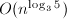(Toom-3乘法),(复数域上的FFT)直到(有限域上的FFT),最后一个已经相当接近线性复杂度了.复杂度较低的算法往往有较大的常数因子,例如当两个相乘数都很小时,普通乘法反而是最快的,实用中常常将这些不同的乘法算法结合起来使用,每次做乘法时都根据相乘两数的大小动态地选择具体采用哪一种算法,选择时用到的参数一般通过实验来确定.
(普通乘法),(Karatsuba乘法),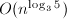(Toom-3乘法),(复数域上的FFT)直到(有限域上的FFT),最后一个已经相当接近线性复杂度了.复杂度较低的算法往往有较大的常数因子,例如当两个相乘数都很小时,普通乘法反而是最快的,实用中常常将这些不同的乘法算法结合起来使用,每次做乘法时都根据相乘两数的大小动态地选择具体采用哪一种算法,选择时用到的参数一般通过实验来确定.
多项式点值表示
在前面的利用一位数乘多位数来做整数乘法时,已经提到过整数乘法还有更快的算法.在介绍这些高级算法之前,先来分析一下,笔算乘法的算法是如此地直截了当,以至于如果单从整数的角度考虑,应该不可能有更快的算法了.我们现在换一个角度,把目光投向多项式.
对于一个次数界为的多项式其系数表示法就是一个由系数组成的向量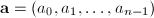,这是我们习以为常的一种表示形式,并且是唯一的;而点值表示法[5]是多项式在个不同点处的点值对构成的集合其中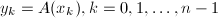.一个多项式可以有很多种不同的点值表示,这是因为每一组 都决定着一种点值表示.系数表示与点值表示之间是可以相互转换的,系数表示到点值表示称为多项式多点求值,点值表示到系数表示称为多项式插值,关于这两个主题的高级讨论将留到与多项式相关的章节中,下面关于整数快速乘法的讨论只需要这几个概念就足够了.
都决定着一种点值表示.系数表示与点值表示之间是可以相互转换的,系数表示到点值表示称为多项式多点求值,点值表示到系数表示称为多项式插值,关于这两个主题的高级讨论将留到与多项式相关的章节中,下面关于整数快速乘法的讨论只需要这几个概念就足够了.
整数乘法与多项式
已知两个次数界为的多项式的系数表示分别为设乘积的系数表示为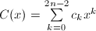,那么这样计算乘积时总共需要 次系数乘法.现在我们首先取定个不同点,然后利用多项式多点求值计算出与在这组点上的点值表示,如果,那么显然有,只需要次系数乘法就可以计算出乘积的点值表示,再通过多项式插值就可以计算出其系数表示.从以上过程不难看出,利用多项式的点值表示做多项式乘法来得简洁明了,如果多项式的默认表示形式就是点值表示,那么连多项式多点求值和多项式插值这两个步骤也可以省去了,多项式乘法就和向量逐点相乘一样简单,从模方法这个更高的角度来看,多项式的点值表示对应于模取为一次多项式组的模表示,多项式多点求值和多项式插值则分别对应于中国剩余定理的逆定理与原定理.不幸的是,我们现在讨论的是整数快速乘法,而整数与多项式之间的联系依赖于整数的进制表示这对应于多项式的系数表示(如果采用整数的模表示,我们也可以让整数对应于多项式的点值表示,不过现在我们不讨论它).这样一来,整数快速乘法就必须解决多项式系数表示与点值表示之间的转换问题,可以把它看成三个步骤:多项式多点求值,向量逐点相乘,多项式插值.
次系数乘法.现在我们首先取定个不同点,然后利用多项式多点求值计算出与在这组点上的点值表示,如果,那么显然有,只需要次系数乘法就可以计算出乘积的点值表示,再通过多项式插值就可以计算出其系数表示.从以上过程不难看出,利用多项式的点值表示做多项式乘法来得简洁明了,如果多项式的默认表示形式就是点值表示,那么连多项式多点求值和多项式插值这两个步骤也可以省去了,多项式乘法就和向量逐点相乘一样简单,从模方法这个更高的角度来看,多项式的点值表示对应于模取为一次多项式组的模表示,多项式多点求值和多项式插值则分别对应于中国剩余定理的逆定理与原定理.不幸的是,我们现在讨论的是整数快速乘法,而整数与多项式之间的联系依赖于整数的进制表示这对应于多项式的系数表示(如果采用整数的模表示,我们也可以让整数对应于多项式的点值表示,不过现在我们不讨论它).这样一来,整数快速乘法就必须解决多项式系数表示与点值表示之间的转换问题,可以把它看成三个步骤:多项式多点求值,向量逐点相乘,多项式插值.
Karatsuba乘法
一次多项式的乘法
Karatsuba算法[3]是1962年发现的,它使用了一个惊人简单但十分有效的策略.首先研究一次多项式的乘法,设 选取插值点组为,则的点值表示分别为,,如果,那么,,,利用简单的多项式插值算法,譬如Lagrange插值公式,可以计算出的系数表示即在这个例子中,多项式多点求值与多项式插值都只用到系数加减法,这表明可以只用三次系数乘法完成一次多项式的乘法.前面这些推理都是多项式的点值表示理论的自然应用,俄罗斯数学家Karatsuba的贡献在于将它应用到了一般的多项式乘法和整数乘法,简单地说来是这样的,如果
选取插值点组为,则的点值表示分别为,,如果,那么,,,利用简单的多项式插值算法,譬如Lagrange插值公式,可以计算出的系数表示即在这个例子中,多项式多点求值与多项式插值都只用到系数加减法,这表明可以只用三次系数乘法完成一次多项式的乘法.前面这些推理都是多项式的点值表示理论的自然应用,俄罗斯数学家Karatsuba的贡献在于将它应用到了一般的多项式乘法和整数乘法,简单地说来是这样的,如果 都是
都是 位进制整数,那么在进制下都是两位数
位进制整数,那么在进制下都是两位数 其中都是进制下的个位数,也就是进制下不超过位的数,记是递归地利用Karatsuba乘法将两个n位进制数相乘所需要的进制个位数乘法次数,那么有
其中都是进制下的个位数,也就是进制下不超过位的数,记是递归地利用Karatsuba乘法将两个n位进制数相乘所需要的进制个位数乘法次数,那么有 ,由此推出
,由此推出 .
.
Karatsuba算法
综合以上这些想法,现在可以写出Karatsuba乘法的详细过程了[2].
输入:位整数 和位整数
和位整数 .
.
输出:的积.
- 令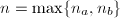,若
 ,利用普通乘法计算并返回;若为奇数,令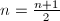,否则令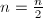.
,利用普通乘法计算并返回;若为奇数,令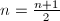,否则令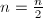. - 若,令;否则令的高位,的低位.
- 若,令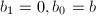;否则令的高位,
 的低位.
的低位. - 使用Karatsuba乘法计算,返回
个0,或者说左移位.Karatsuba乘法实现起来并不困难,因此在算法理论中也常常被拿来用作分治算法或者二分法的例子.
Toom-Cook乘法
Toom-3乘法
沿着Karatsuba的思路,考虑二次多项式的乘法,设选取插值点组为如果,类似地,利用简单的多项式插值算法,譬如Lagrange插值公式,可以计算出的系数表示,其中
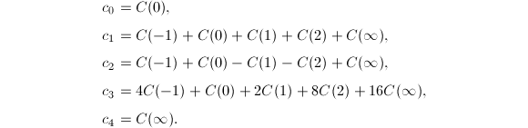
如果不计乘以较小常数的乘法和加减法,我们可以只用5次系数乘法完成二次多项式的乘法,以此为基础仿照Karatsuba乘法而得到的算法称为Toom-3乘法.记是递归地利用Toom-3乘法将两个n位进制数相乘所需要的进制个位数乘法次数,那么有,由此推出.
Lagrange插值公式
更一般地,考虑 次多项式的乘法,设选取插值点组为如果,这一次我们实际地用一下Lagrange插值公式来计算出的系数表示.
次多项式的乘法,设选取插值点组为如果,这一次我们实际地用一下Lagrange插值公式来计算出的系数表示.
都是位进制整数,那么在进制下都是位数其中都是进制下的个位数,也就是进制下不超过位的数,记是递归地利用Toom-r乘法将两个n位进制数相乘所需要的进制个位数乘法次数,那么有 ,由此推出.
,由此推出.
这样得到的一系列快速乘法算法统称为Toom-Cook乘法[3],其中Toom-2乘法与Karatsuba乘法大致相同,只是选取的插值点不一样而已.由于所以使用Toom-Cook乘法进行位整数乘法所需要的进制个位数乘法次数的下界趋近于 ,这是一个很好的结果.但是由于多项式多点求值和多项式插值所需要的线性级操作会随着的增加而迅速增加,以至于一般说来仅仅当时,Toom-Cook乘法才是实用的.
,这是一个很好的结果.但是由于多项式多点求值和多项式插值所需要的线性级操作会随着的增加而迅速增加,以至于一般说来仅仅当时,Toom-Cook乘法才是实用的.
FFT乘法
快速傅立叶变换(FFT)[6]被认为是20世纪数值计算和算法领域最重要的成果之一,它常常被用于快速计算卷积,这对于信号处理等工程领域尤其重要.对于符号计算来讲,FFT实际上是多项式快速多点求值和快速插值算法一个高度优化的特例.不过,在这里我们只需要利用多项式乘法和向量卷积之间的相似性,就可以很好地利用FFT来加速多项式乘法和整数乘法.在上一节中,Toom-Cook乘法通过充分地利用分治与递归有效地减少了多项式多点求值和多项式插值操作的消耗;下面将要讨论的FFT乘法则是通过精心地挑选求值点,把系数表示与点值表示之间的转换所需的操作压缩为次线性级别,即,其中代表相乘的两个整数的位数.
原根
顾名思义,FFT是用来快速计算离散傅立叶变换(DFT)的方法,我们可以将DFT简单的理解成以单位复根作为求值点时多项式系数表示到点值表示之间的转换,关于它的原始定义及详细介绍可以在任何一本有关数值计算的教科书中找到.
为了更好地理解DFT,首先来看一下什么是原根,这是一个代数数论的概念.
按照这个定义,任意素数的整数次幂单位复根都是复数域 是一个环,.
是一个环,.
 的单位原根,例如就是一个8次单位原根.除此之外,对于模整数环
的单位原根,例如就是一个8次单位原根.除此之外,对于模整数环 ,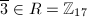是16次单位原根,与此同时,虽然,但并不是的16次单位原根,因为.如果是素数的整数次幂,那么当且仅当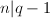时有限域
,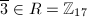是16次单位原根,与此同时,虽然,但并不是的16次单位原根,因为.如果是素数的整数次幂,那么当且仅当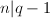时有限域 存在次单位原根.
存在次单位原根.
从定义容易导出原根的一些特殊性质.
DFT
另外一个需要用到的概念是循环卷积.
不难发现,循环卷积的定义跟多项式乘积的定义很相似,我们可以简单地把它理解成先扩充多项式次数再做多项式乘法的过程.设 的多项式乘积
的多项式乘积 是
是 次多项式,则
次多项式,则 和
和 的次数可能小于,如果在它们的最高次项之前添上系数为0的高次项并把它们看成次多项式,这时候会发现的循环卷积恰好等于,这就是循环卷积和普通多项式乘积之间的关系.
的次数可能小于,如果在它们的最高次项之前添上系数为0的高次项并把它们看成次多项式,这时候会发现的循环卷积恰好等于,这就是循环卷积和普通多项式乘积之间的关系.
现在可以正式地给出DFT的定义了.
在下面的定理我们将会发现,原根的良好性质保证了DFT的逆变换和DFT具有相同的结构.
 表示的逆变换,那么
阶范德蒙(Vandermonde)方阵.的
表示的逆变换,那么
阶范德蒙(Vandermonde)方阵.的 位元素是，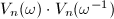的位元素为
因此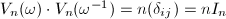,即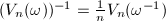,亦即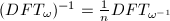.
□
和的循环卷积可以表示成其中表示一维向量之间逐点相乘.
位元素是，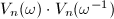的位元素为
因此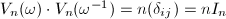,即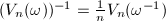,亦即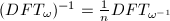.
□
和的循环卷积可以表示成其中表示一维向量之间逐点相乘.
FFT算法
如果采用普通的多项式多点求值方法,譬如说Horner法则,计算阶DFT大约需要次系数乘法,为了寻找更快的方法,需要对DFT的结构进行仔细分析.先来看向量的第个分量 ,因为
,因为 是次单位原根,所以至多只有个不同的值,特别地,如果是的因子,那么是
是次单位原根,所以至多只有个不同的值,特别地,如果是的因子,那么是 次单位根,因此至多只有个不同的值,如果我们已经知道了哪些具有相同的值,就可以像合并同类项一样将对应于相同的的系数先加在一起,然后再和相乘,这样就可以有效地减少乘法的次数,跟计算时转而计算是一个道理.设,那么即,一般地,是素数的整数次幂,不妨设,其中
次单位根,因此至多只有个不同的值,如果我们已经知道了哪些具有相同的值,就可以像合并同类项一样将对应于相同的的系数先加在一起,然后再和相乘,这样就可以有效地减少乘法的次数,跟计算时转而计算是一个道理.设,那么即,一般地,是素数的整数次幂,不妨设,其中 为素数,设的素因子分解中的幂次为,那么应该有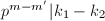,这可以当作合并的系数时的依据.广义的快速傅立叶变换可以处理为任意素数的情形,我们这里接下来要讨论的的FFT则特指基的快速傅立叶变换.
为素数,设的素因子分解中的幂次为,那么应该有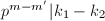,这可以当作合并的系数时的依据.广义的快速傅立叶变换可以处理为任意素数的情形,我们这里接下来要讨论的的FFT则特指基的快速傅立叶变换.
为了高效地多点求值,FFT方法运用了分治策略,设次多项式的系数表示向量为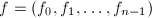,将它依下标的奇偶性分成两组得到
![\begin{align*}
f^{[0]}&=(f_0,f_2,\ldots,f_{n-2}),\\
f^{[1]}&=(f_1,f_3,\ldots,f_{n-1}),
\end{align*}](latex/latex2png-Arithmetic_268188705_.gif) 那么向量的第个分量注意到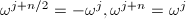,因此可以改写成
其中.如果从多项式的角度来看,这其实就是.
那么向量的第个分量注意到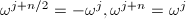,因此可以改写成
其中.如果从多项式的角度来看,这其实就是.
经过以上的分析,现在可以写出FFT的详细过程了.
设是利用FFT进行多点求值时所需要的系数乘法的次数,那么 .
. ,如果环R为复数域,那么利用FFT进行整数乘法时需要考虑浮点运算的截断误差和截断位数,这种乘法算法的复杂度为,其中.采用FFT计算DFT比直接按照定义计算要快得多,它成功的主要原因是利用了单位原根的特殊性质和分治策略.快速傅立叶变换在信号处理,多媒体数据压缩等领域被广泛使用,人们对基本算法进行了许多改进以获得更高的速度和适应于特定的硬件[6].
,如果环R为复数域,那么利用FFT进行整数乘法时需要考虑浮点运算的截断误差和截断位数,这种乘法算法的复杂度为,其中.采用FFT计算DFT比直接按照定义计算要快得多,它成功的主要原因是利用了单位原根的特殊性质和分治策略.快速傅立叶变换在信号处理,多媒体数据压缩等领域被广泛使用,人们对基本算法进行了许多改进以获得更高的速度和适应于特定的硬件[6].
有限域上的FFT
如果,即使很大,也很容易求出次单位原根.但是对于有限域,前面已经提到过,如果是素数的整数次幂,那么当且仅当时有限域才存在次单位原根,当很大时,并非总能轻易地找到这样的素数.尽管如此,相比于复数域而言,使用有限域上的原根做FFT不会涉及到浮点操作,因此也不用考虑中间精度的问题,正因为这样,在利用FFT计算整系数多项式的乘积或者计算高精度整数乘法时,我们还是希望使用有限域.注意到有限域上的算术都是以为模的,因此利用 上的FFT求出的点值向量的各项系数都不应该超过,否则最后无法将结果还原到
上的FFT求出的点值向量的各项系数都不应该超过,否则最后无法将结果还原到 中[6].
中[6].
设,,那么分别对应于多项式 的乘积
的乘积 对应于多项式,其中在典型的计算机代数系统中,机器精度整数的溢出界,整数位数的界也取为,那么根据的限制应该有(s+1)B^2\approx 2^{192}$" class="latex-inline" style="vertical-align: -5px" width="150" height="19">.这样大的素数以及有限域是不容易使用的,为了解决这个问题,可以借用模方法中的技术,选取三个机器精度的素数,分别在中计算出模乘积,然后利用中国剩余定理计算出中的乘积.
对应于多项式,其中在典型的计算机代数系统中,机器精度整数的溢出界,整数位数的界也取为,那么根据的限制应该有(s+1)B^2\approx 2^{192}$" class="latex-inline" style="vertical-align: -5px" width="150" height="19">.这样大的素数以及有限域是不容易使用的,为了解决这个问题,可以借用模方法中的技术,选取三个机器精度的素数,分别在中计算出模乘积,然后利用中国剩余定理计算出中的乘积.
考虑到中国剩余定理的计算,利用有限域上的FFT进行整数乘法的复杂度为.
参考文献
[1]数值分析, 清华大学出版社, 2001.
[2]计算机代数, 清华大学出版社, 北京, 2004.
[3]The art of computer programming, volume 2 (3rd ed.): seminumerical algorithms, Addison-Wesley Longman Publishing Co., Inc., Boston, MA, USA, 1997.
[4]The GNU MP Bignum Library, http://gmplib.org/.
[5]算法导论, 机械工业出版社, 2006.
[6]Modern Computer Algebra, Cambridge University Press, 2002.